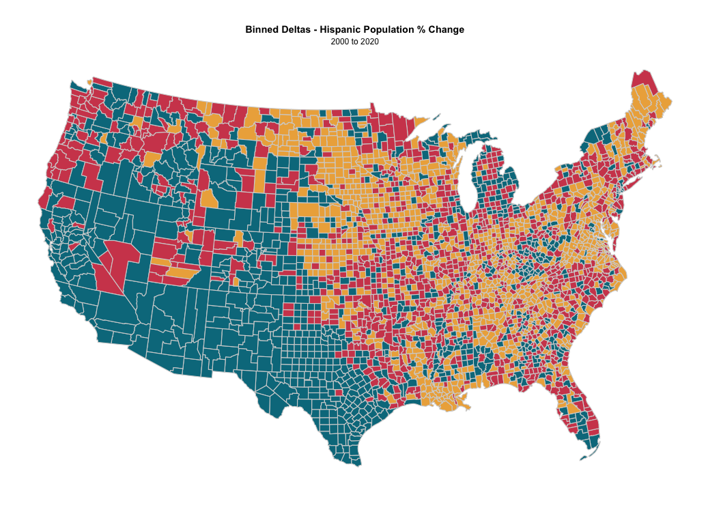
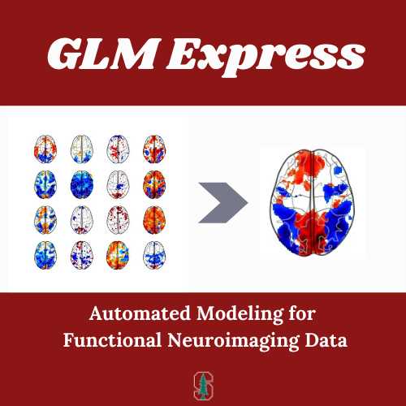
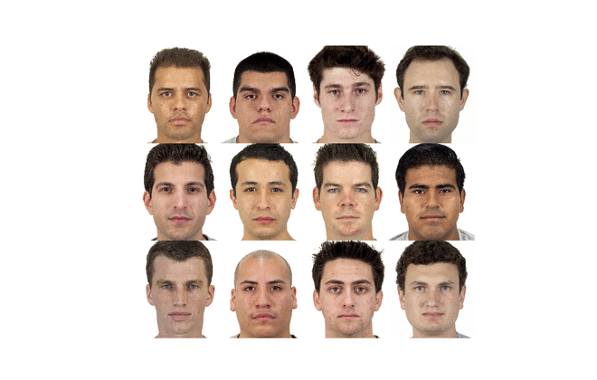
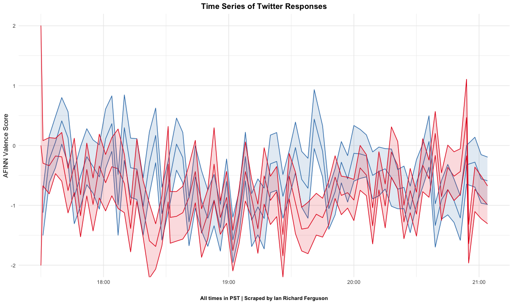

I'm a developer and data scientist in the progressive tech space. I take pride in leveraging data and technology to build a more progressive future, one vote at a time.
Prior to entering the world of politics, I served as the Lab Manager for the Stanford Social Neuroscience Lab under the direction of Dr. Jamil Zaki. My research in this role took a data-driven approach to modeling the downstream psychological consequences of hierarchical status threat. For a primer on this research, see my Master's Thesis , developed at New York University under the guidance of Dr. Jon Freeman and Dr. DongWon Oh.
June 22 - Present | Brooklyn, NY
June 20 - August 22 | Palo Alto, CA
December 18 - June 20 | New York, NY
In an ongoing project, I am attempting to quantify the degree to which local demographic changes lead to higher rates of hate speech on social media sites (namely Twitter).
GLM Express is a lightweight, object-oriented approach to modeling functional neuroimaging data. It includes Subject and GroupLevel objects, and is optimized to work on any BIDS validated project. This package is freely available on PyPI!
Taking an experimental approach, I measured the cognitive effects of status threat in non-Hispanic white social targets. After a threat prime, participants rated ensembles of mixed-race groups on several dimensions. A GEE model offered evidence for a linear trend, such that as the number of Hispanic social targets increased the group was rated as more threatening.
Using a custom Python script, I scraped tweets mentioning Trump or Biden every minute throughout the first General Election debate in 2020. Tweets were tokenized, and word stems were assessed for AFINN polarity values.
Made with ❤️ in San Francisco